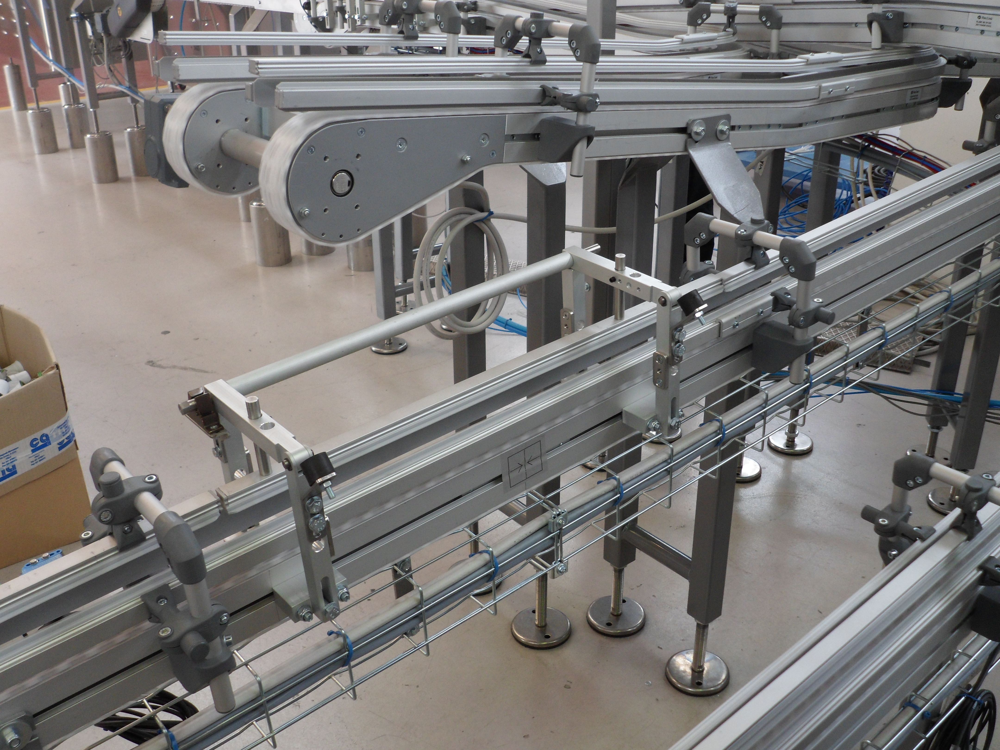

Codice interno: COMP-RUL-01

I rulli sono componenti fondamentali per il corretto funzionamento dei trasportatori. Disponibili in acciaio, inox o PVC, garantiscono scorrevolezza, durata e affidabilità in qualsiasi ambiente produttivo.
Produciamo rulli su misura per ogni trasportatore.
Contattaci